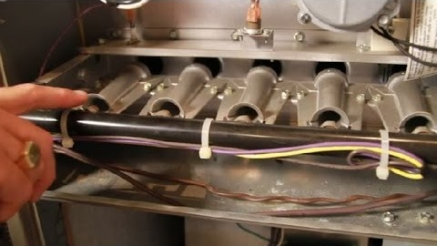
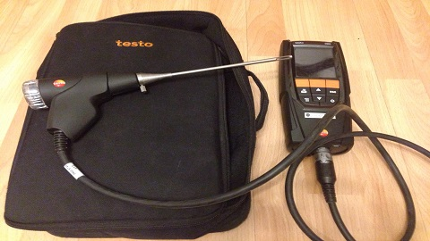
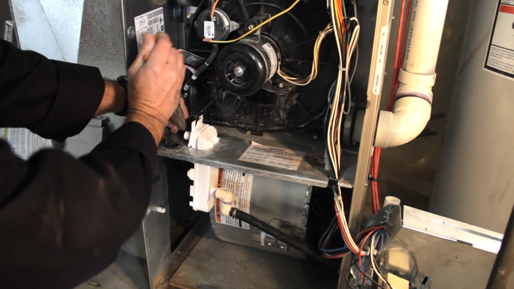

Sok éves szakmai tapasztalat, igényesség, gyorsaság, megbízhatóság, kedvező áron.
Precíz hibafeltárás, gyors alkatrész beszerzés és javítás.
Károsanyag kibocsátás hitelesített műszeres elemzése.
Gázkészülékek karbantartása, tisztítása, állapotfelmérése.
